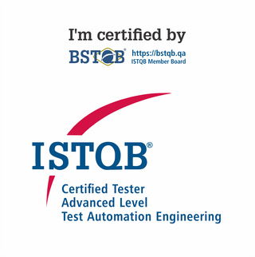

UI com Playwright
Testes E2E com Page Objects e padrão AAA para o e-commerce de demonstração Gin & Juice Shop.
Ver no GitHubAnalista de QA · Qualidade de ponta a ponta, do requisito à entrega
Salvador, BA · Remoto
8 anos em QA · 5x certificada pelo ISTQB · Estratégia de QA para produtos digitais
Profissional de QA com 8 anos de experiência em Qualidade de Software, atuando em todo o ciclo de entrega: da análise de requisitos e riscos à definição da estratégia de testes e à liberação das entregas. Experiência em produtos Web, Mobile (Android e iOS) e APIs, com automação como parte da estratégia e atuação próxima a times de Produto, Desenvolvimento e da área de Negócios.

CTAL-TAE · 2025Projetos de testes desenvolvidos para estudar novas metodologias e ferramentas.
Testes E2E com Page Objects e padrão AAA para o e-commerce de demonstração Gin & Juice Shop.
Ver no GitHubTestes de interface em JavaScript para o Buger Eats, com dados gerados pelo Faker e execução em GitHub Actions.
Ver no GitHubTestes da API REST Contact List, com relatório HTML do Newman e pipeline de CI/CD no GitHub Actions.
Ver no GitHubEstratégia e plano de testes, análise de riscos, análise de causa raiz, Shift-Left, métricas de qualidade
Funcionais, regressão, integração, E2E, exploratórios, carga, UAT, testes mobile, testes de segurança (OWASP)
Scrum, Kanban, SAFe, Waterfall (cascata), Jira, Azure DevOps, Azure Test Plans
REST, GraphQL, Postman, Newman, Swagger/OpenAPI
SQL, Oracle, PostgreSQL, MySQL, massa de dados
Playwright, Cypress, Jest, Supertest, POM, BDD/Gherkin
GitHub Actions, Jenkins, Git, JMeter
Validação de soluções com IA e OCR; uso de Claude e Gemini para geração de casos de teste, automação, massas de dados e documentação
Pós-graduação · conclusão prevista em dez/2026
PUC Minas
Aprofundamento em estratégia, automação e métricas de qualidade aplicadas a projetos de grande porte.
Bacharelado · concluído em 2025
Universidade Federal da Bahia (UFBA)
TCC: Geração de Testes Automatizados End-to-End — um estudo experimental comparativo utilizando LLMs (aprovado com nota 10).
Português · nativo / Inglês · intermediário (B2)
Desenvolvimento colaborativo do Salvamaria, plataforma de segurança para mulheres integrada à Operação Ronda Maria da Penha.
Planejamento estratégico, criação de materiais e realização de palestras e oficinas de tecnologia em escolas públicas de Salvador.